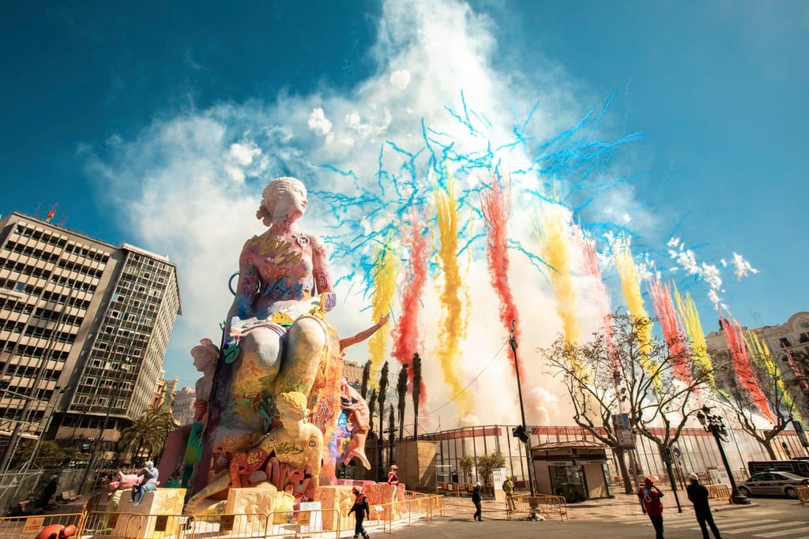
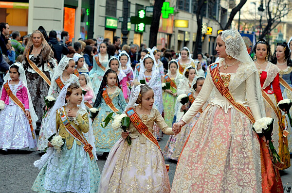
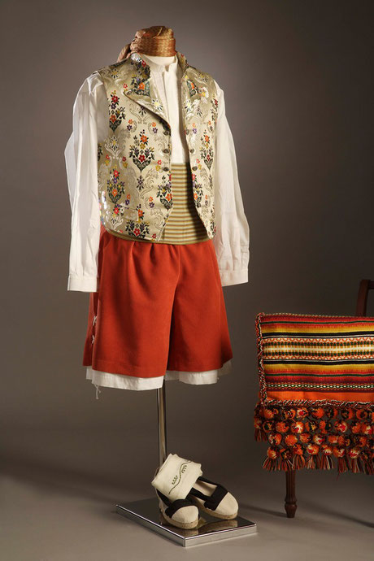

|  | ||||||
| Valencia | ||||||
| Home | Cuisine | Clothing | Festivals | Spanish Page | About Us | Contact Us |
|
Valencia has very vibrant and colorful
traditional clothes which matches their vibrant culture. Their
traditional clothing is worn during the Fallas festival by women which
lasts from 15-19 March. These dresses are typically tailored and
hand-sewn. These traditional clothes are quite expensive, even for the
locals and are made of silk. The upper body is a corset like piece made
of silk which consists of a justillo, jubón and pañuelo. The justillo is
first worn and has a round/square neckline and is sleeveless. The jubón
is worn on top of the justillo and has long sleeves and finally the
pañuelo which has lace or stunning embroidery done and will be worn to
cover the shoulders and neckline.
For the lower body, you have the guardapiés, which is the skirt and has
detailed embroidery of flowers and usually has floral patterns all over
it. Then, it is decorated with lace, sequins and more embroidery
garments. The delantal is worn on top of the guardapiés and looks like
an apron and could be made of lace or other sheer fabrics like cotton. |
|  |
|
For the men’s traditional clothing, they typically wear a type of
trouser which is loose called a saragüell and reaches just below the
knees. For the upper body, they wear a chaleco which is a waistcoat
decorated with a few floral designs and patterns. They also wear a chupa
which is a jacket worn over the chaleco typically manufactured out of
cotton, wool or silk. |
|  |